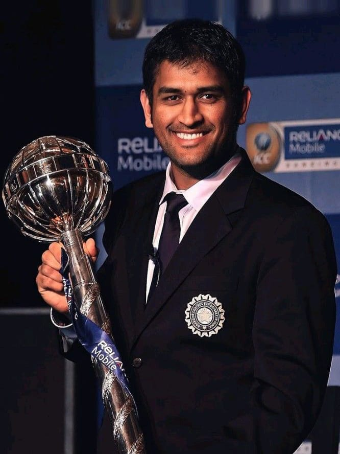
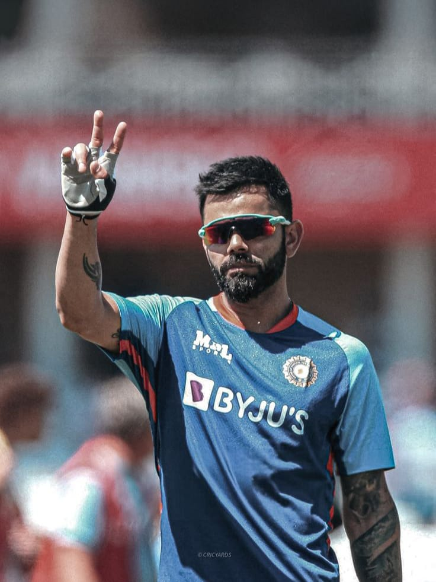
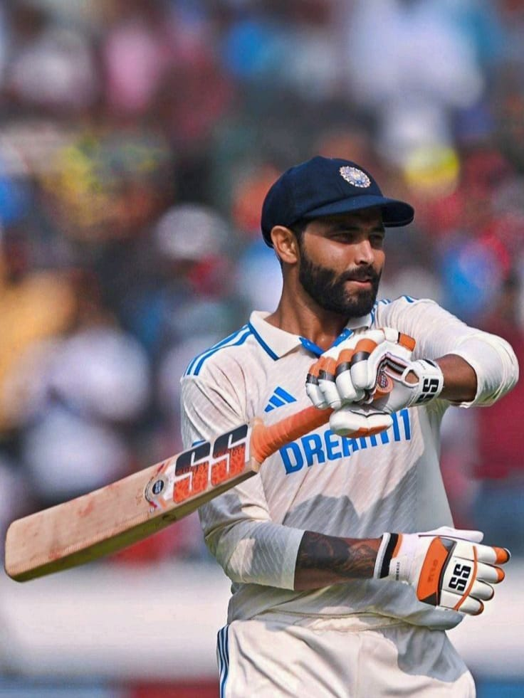
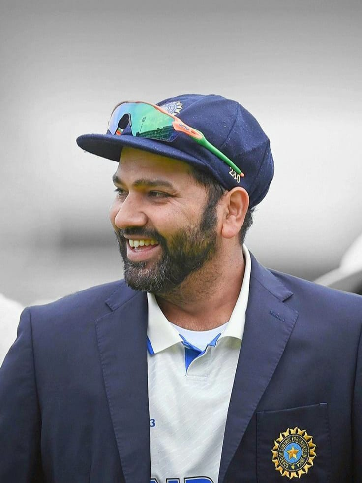
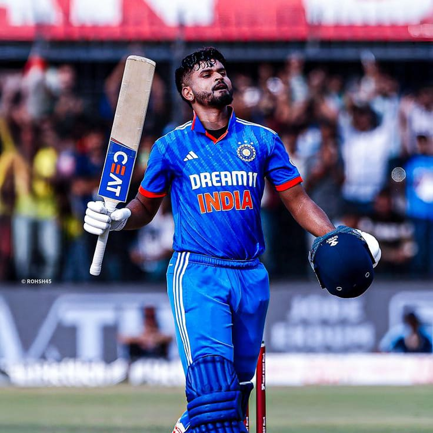

1.Mahendra Singh Dhoni:
2.Virat Kohli:
3.Ravindra Jadeja:
4.Rohit Sharma:
5.Shreyas Iyer:
6.Jasprit Bumrah:

Note: Click the Images to get the Info about the Players.
| Stadium Name | City | State | Capacity | Famous For |
|---|---|---|---|---|
| >Narendra Modi Stadium | Ahmedabad | Gujarat | 1,32,000 | Largest stadium in the world |
| Eden Gardens | Kolkata | West Bengal | 66,000 | Historic venue, “Mecca of Indian cricket” |
| Wankhede Stadium | Mumbai | Maharastra | 33,000 | 2011 WC Final, sea-side breeze |
| M. Chinnaswamy Stadium | Bengaluru | Karnataka | 40,000 | High-scoring pitch, electrifying atmosphere |
| M. A. Chidambaram Stadium | Chennai | Tamil Nadu | 38,000 | Spin-friendly wicket, oldest in India |
| HPCA Stadium | Dharamshala | Himachal Pradesh | 23,000 | Scenic Himalayan background |
| Rajiv Gandhi International Stadium | Hyderabad | Telangana | 39,200 | Flat wicket, orange army fans |